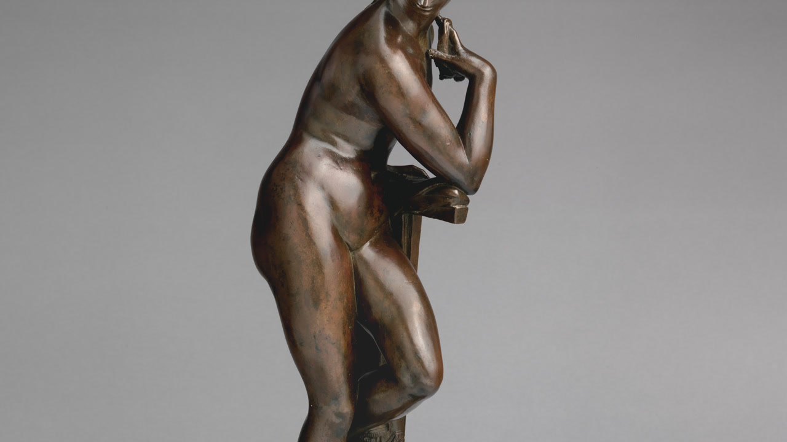

ORBITAL / ESTUDIO 04
Una órbita no es una línea.
Escena espacial interactiva con cámara Three.js, profundidad real y movimiento que respeta reduced motion.
cámara 0.00° · 0 frames
01cuerpo
6°órbita
24capas
WebGLrender
cámara Three.js real · rotación 1,5°